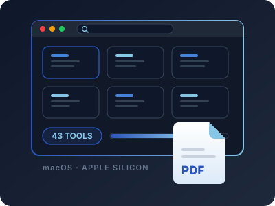

📄 PdfRomeo — 43-Tool PDF Suite for macOS
A professional PDF toolkit for Apple Silicon that keeps every document on the machine — no upload, no account, no cloud round-trip. Forty-three focused tools across six families: organize (merge, interleaved mix, split by range/bookmark/size/text, extract, reorder, crop, rotate, N-up), edit & sign (click a page to place text or click existing text to rewrite it, fillable form creation, signature images, watermarks, Bates numbering continuous across files), convert (PDF to Word, table-aware Excel, PowerPoint, text, and JPG/PNG/TIFF at any DPI), protect (AES-128 with granular permissions, unlock, flatten), and scan repair (real image-downscaling compression, auto-deskew, Tesseract OCR, damaged-file recovery). Built on PySide6 with pikepdf and PyMuPDF, its engine layer carries no Qt imports at all, so all forty-plus operations are drivable from a CLI, a server, or a test harness without ever opening a window.
Keywords Python·PySide6·Qt·pikepdf·PyMuPDF·Tesseract OCR·Apple Silicon·Offline